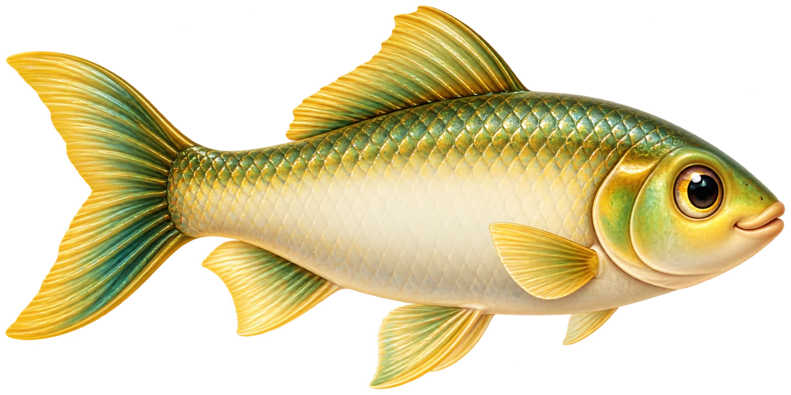
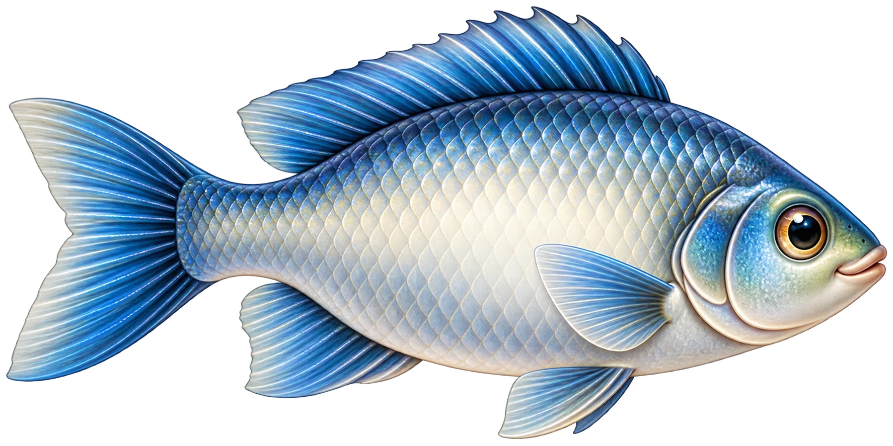
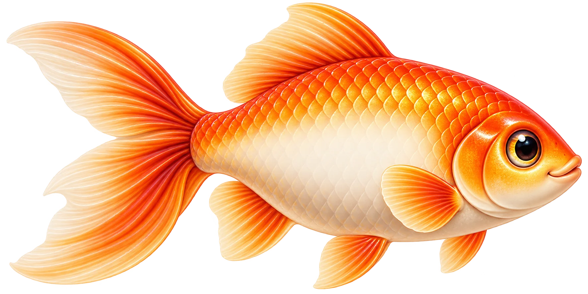

Sahabat untuk Belang
Suku kata: Hana · Belang
Muka surat 1 / 5



Pengembaraan cerita • Tahun 3
Pancing ilmu. Cipta cerita kamu.
Muzik berhenti sementara ketika suara dimainkan atau cikgu merakam. Pilihan kamu disimpan pada peranti ini.
Ulang hingga lima muka surat. Jawab bonus peribahasa dan hasilkan buku.
Pancing ilmu. Cipta cerita.
Setiap ahli pilih peranan yang berbeza. Nama akan muncul apabila rakan masuk.
Permainan dibuka apabila semua peranan telah diisi.
Lima muka surat. Lima keputusan. Satu buku hasil bersama.
Ulang giliran ini hingga muka surat kelima. Kemudian, pancing bonus peribahasa dan semak buku bersama.
Muat naik kad sambung kamu. Tidak perlu mendaftar nama baharu. Jika baru pertama kali bermain, abaikan ruangan ini.
Buka bilik kumpulan, pantau jawapan individu dan muat turun rekod.
Kongsi kod ini dengan murid:
Kunci guru membuka rekod bilik ini. Simpan sendiri. Bilik aktif selama 30 hari.
Mata permainan: bukti 10 + keputusan cerita 10 + bonus peribahasa 5 = 25. Mata keputusan diberikan untuk menyelesaikan pilihan, bukan menentukan kreativiti betul atau salah. Rekod ini membantu pemerhatian guru dan tidak menetapkan Tahap Penguasaan secara automatik.
Baca cerita bersama-sama. Kemudian, tekan Selesai baca.
Suku kata: Hana · Belang
Tekan satu ayat di atas untuk meneruskan.
Pusingan 1 / 2 · Nilai murni
Bincang satu idea sahaja. Seorang ahli mencatat, kemudian seorang lagi memancing jawapan kumpulan. Kata kunci juga boleh.
Catat satu idea kumpulan untuk meneruskan.
Angkat satu tangan di hadapan kamera sehingga seluruh tangan kelihatan dalam kotak kamera.
Kamera hanya aktif selepas kamu membenarkannya. Imej diproses pada peranti ini; tiada video dirakam atau dihantar. Mikrofon tidak digunakan.
Kamera belum dibuka. Kamu boleh mencuba latihan atau menggunakan butang pancing biasa.
Muat turun fail HTML ini, kemudian buka terus dalam Chrome. Tekan Buka kamera dan pilih Benarkan / Allow.
Jika pernah disekat, buka tetapan laman Chrome dan tukar Kamera kepada Benarkan. Semak juga izin kamera komputer dan tutup aplikasi lain yang menggunakan kamera.
Jika masih gagal, hantar gambar mesej serta tiga baris semakan kamera di atas kepada guru.
Cuba tangkap ikan latihan. Tiada markah diberikan.
Kumpulan kamu mendapat 10 mata.
Sentuh satu ikan yang membawa jawapan kamu.
2. Lima keputusan yang membentuk cerita
PDF mengandungi satu kulit hadapan dan lima muka surat cerita (6 halaman keseluruhan). Catatan kumpulan disimpan berasingan. Muat naik PDF di Heyzine untuk menerbitkan buku.
Rakam bacaan cerita dengan sebutan dan intonasi cikgu sendiri.
Suara AI bahasa Melayu
Suara Guru
Rakam menggunakan langkah di bawah.Rakaman mestilah sepadan dengan ayat yang murid baca. Jika jalan cerita berubah, rakam semula halaman yang berubah.
Tekan Rakam bacaan. Benarkan mikrofon. Baca teks di sebelah, kemudian tekan Henti & simpan.
Selepas merakam, pemain audio muncul di sini. Tekan main untuk menyemak suara.
Muat turun salinan rakamanGunakan alamat laman dan pelayar yang sama untuk membuka rakaman tersimpan. Muat turun salinan untuk dibawa ke peranti lain. Dengar setiap rakaman untuk memastikan suara dan teksnya betul.